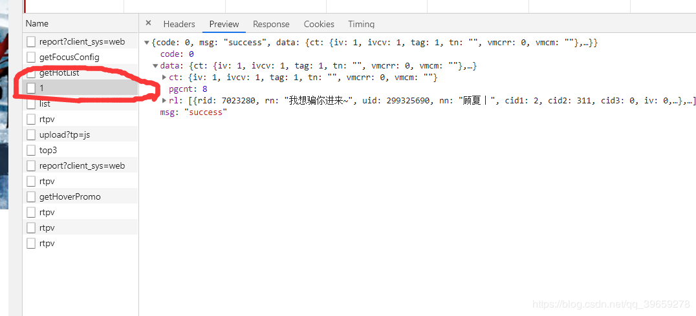

用谷歌浏览器摁F12打开开发者工具，然后打开斗鱼颜值分类的页面，如图：
在里面的请求中，最后发现它是以ajax加载的数据，数据格式为json，如图：

圈住的部分是我们需要的数据，然后复制它的网址为https://www.douyu.com/gapi/rknc/directory/yzRec/1，出于学习目的只爬取第一页（减少服务器压力）。然后把网址放到浏览器中测试是否可以访问。如图：
结果正常。
最后分析发现json中的data里面的rl是每个房间的信息，大概有200条左右，拿出其中的一条查询里面的图片链接。
{
"rid": 1282190,
"rn": "大家要开心啊~",
"uid": 77538371,
"nn": "鲸鱼欧尼",
"cid1": 8,
"cid2": 201,
"cid3": 581,
"iv": 1,
"av": "avatar_v3/201908/d62c503c603945098f2c22d0d95c3b2e",
"ol": 610574,
"url": "/1282190",
"c2url": "/directory/game/yz",
"c2name": "颜值",
"icdata": {
"217": {
"url": "https://sta-op.douyucdn.cn/dy-listicon/king-web.png-v3.png",
"w": 0,
"h": 0
}
},
"dot": 2103,
"subrt": 0,
"topid": 0,
"bid": 0,
"gldid": 0,
"rs1": "https://rpic.douyucdn.cn/live-cover/appCovers/2019/08/01/1282190_20190801002745_big.jpg/dy1",
"rs16": "https://rpic.douyucdn.cn/live-cover/appCovers/2019/08/01/1282190_20190801002745_small.jpg/dy1",
"utag": [
{
"name": "呆萌鲸鱼",
"id": 111405
},
{
"name": "美美美",
"id": 41
},
{
"name": "萌萌哒",
"id": 520
},
{
"name": "刀神老婆",
"id": 132367
}
],
"rpos": 0,
"rgrpt": 1,
"rkic": "",
"rt": 2103,
"ot": 0,
"clis": 1,
"chanid": 0,
"icv1": [
[
{
"id": 217,
"url": "https://sta-op.douyucdn.cn/dy-listicon/web-king-1-10-v3.png",
"score": 994,
"w": 0,
"h": 0
}
],
[
],
[
],
[
]
],
"ioa": 0,
"od": ""
}测试发现rs16是房间的图片，如果把链接最后的/dy1去掉的话，图片就成大图了，心里美滋滋。
import gevent
import json
from urllib import request
from gevent import monkey
# 使用gevent打补丁，耗时操作自动替换成gevent提供的模块
monkey.patch_all()
# 图片存放的目录
ROOT = "./images/"
# 设置请求头，防止被反爬虫的第一步
header = {
"User-Agent": "Mozilla/5.0 (Windows NT 10.0; Win64; x64) AppleWebKit/537.36 (KHTML, like Gecko) Chrome/75.0.3770.142 Safari/537.36 "
}
def download(img_src):
# 把每个链接最后的/dy1去掉
img_src: str = img_src.replace("/dy1", "")
# 提取图片名
file_name: str = img_src.split("/")[-1]
response = request.urlopen(request.Request(img_src, headers=header))
# 保存到本地
with open(ROOT + file_name, "wb") as f:
f.write(response.read())
print(file_name, "下载完成！")
if __name__ == '__main__':
req = request.Request("https://www.douyu.com/gapi/rknc/directory/yzRec/1", headers=header)
# 把json数据转换成python中的字典
json_obj = json.loads(request.urlopen(req).read().decode("utf-8"))
tasks = []
for src in json_obj["data"]["rl"]:
tasks.append(gevent.spawn(download, src["rs16"]))
# 开始下载图片
gevent.joinall(tasks)由于使用的是协程，比线程效率更高，不到1秒就把第一页的图片全部爬取下来了。效果如图：
此案例仅用于学习gevent的使用。